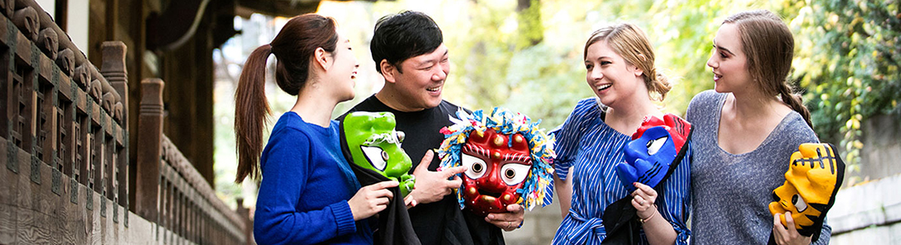

> 프로그램 > 기업·외국인 단체
기업·외국인 단체
맞춤프로그램
특별한 전통문화 체험을 위한 맞춤 프로그램
문의처 안내

- 상세 문의처 안내
- 기업 제휴 & 마케팅 문의 정경무 팀장 (031-288-1716 / welcome2.kfv@gmail.com)
- 국내 기업/성인단체 문의 이미소 매니저 (031-288-1705 / miso2992@ikfv.co.kr)
- 외국인 및 인바운드 김슬기 매니저 (031-288-2824 / cj5-sk5@hanmail.net)
- ※내선연결이 어려운 경우, 해당지역 담당자 이메일로 문의 부탁 드립니다.
프로그램 및 요금안내
| 프로그램 | 이용금액 | 내용 |
|---|---|---|
| 국궁체험 | 22,000원 (입장료포함) | 활 쏘기 교육 후 활로 과녁 맞추기 |
| 나무공예 | 22,000원 (입장료포함) | 천연재료를 이용한 솟대 만들기 |
| 닥종이 공예 | 22,000원 (입장료포함) | 한지를 이용한 한복 입은 인형 만들기 |
| 단소만들기 | 24,000원 (입장료포함) | 대나무로 단소 제작 후 소리내보기 |
| 특단소(고급형)만들기 | 28,000원 (입장료포함) | 일반 단소보다 고급스러운 단소 만들기 |
| 소금 만들기 | 29,000원 (입장료포함) | 우리나라 전통 관악기로 가장 고음을 내는 소금 만들기 |
| 옹기 음각 | 25,000원 (입장료포함) | 제작된 옹기 틀에 글과 모양 새겨 넣기 |
| 옹기 성형 | 26,000원 (입장료포함) | 진흙을 이용한 나만의 옹기 제작하기 |
| 옹기 캔들만들기 | 35,000원 (입장료포함) | 옹기그릇에 천연왁스와 오일을 넣어 고급캔들 만들기 |
| 문화해설사 | 무료 | 용인시청 문화관광과에 사전 (최소 7일 전) 신청바랍니다. |
* 기업&외국인 단체 체험 프로그램 적용기준: 20명 이상, 성인기준
* 체험은 날씨 및 내부 사정에 의해 변경될 수 있습니다.